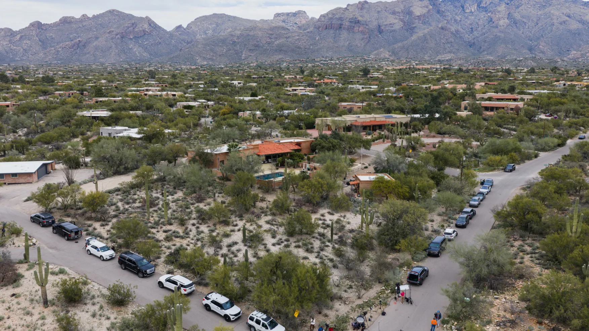
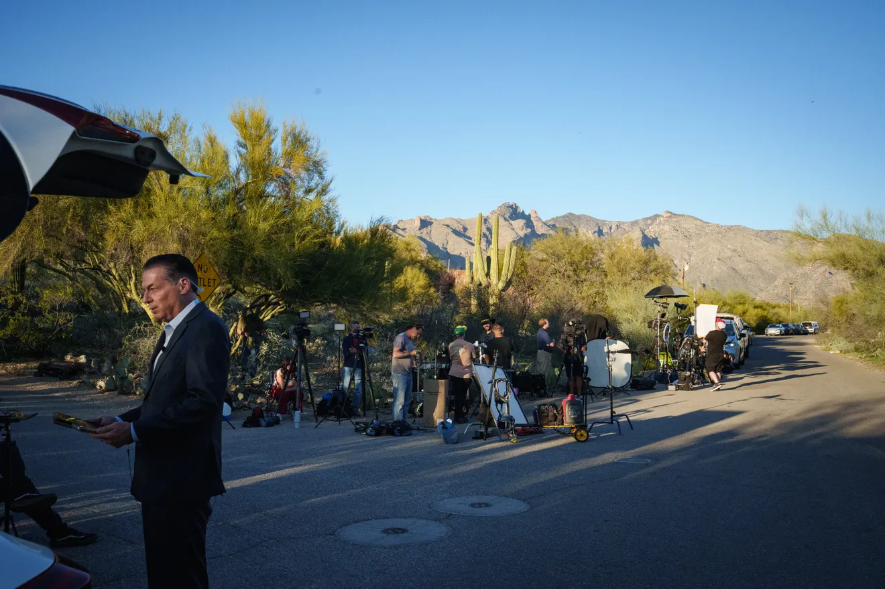
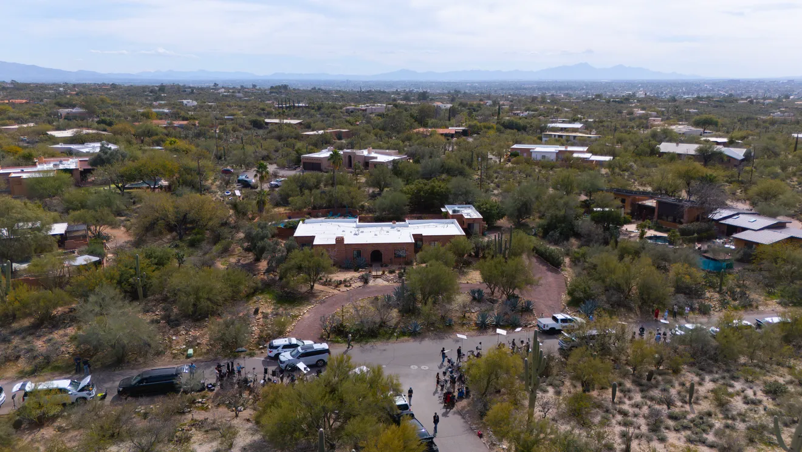
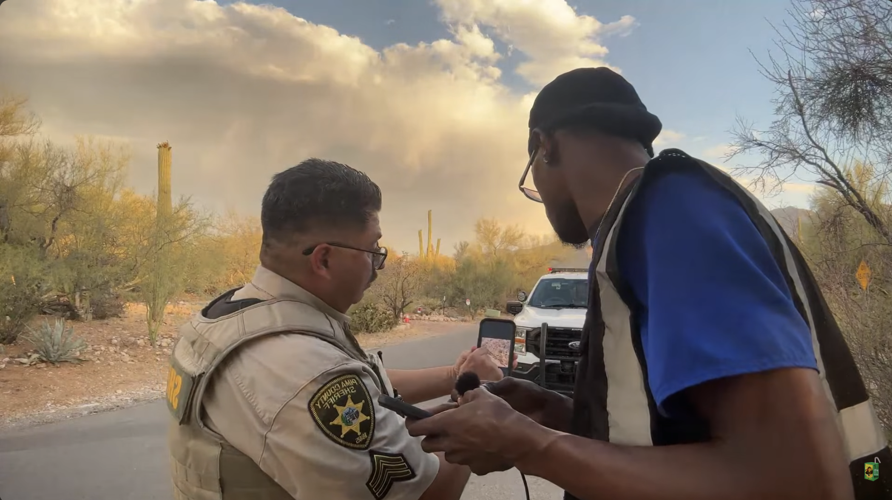
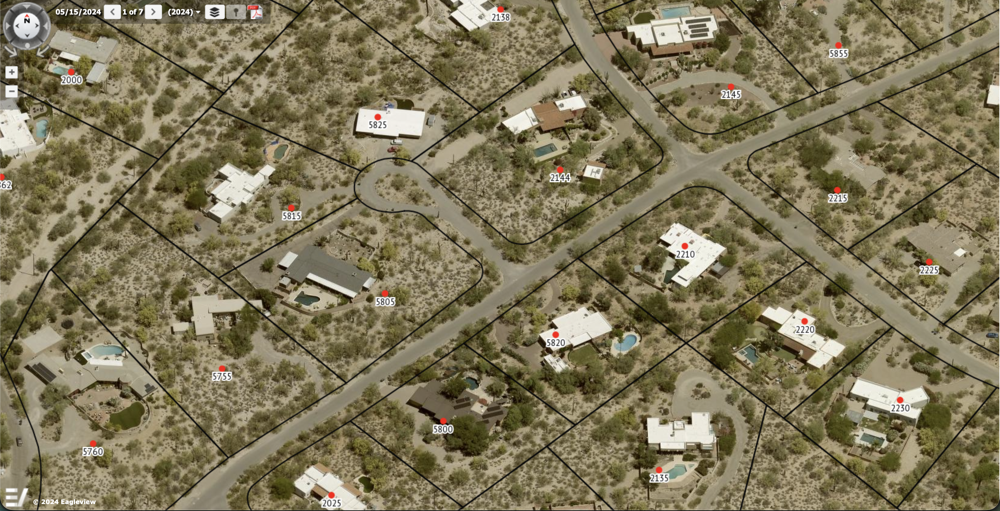
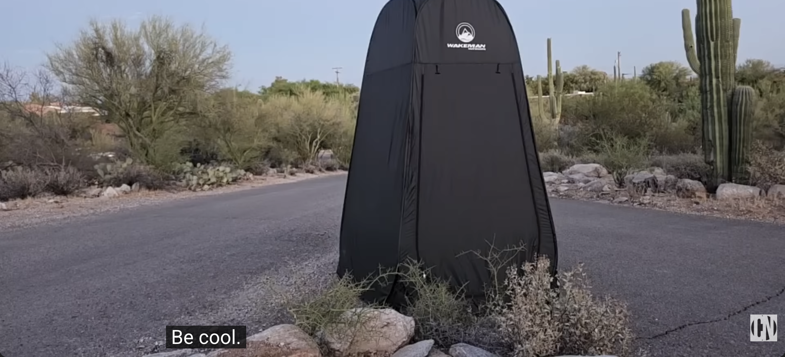
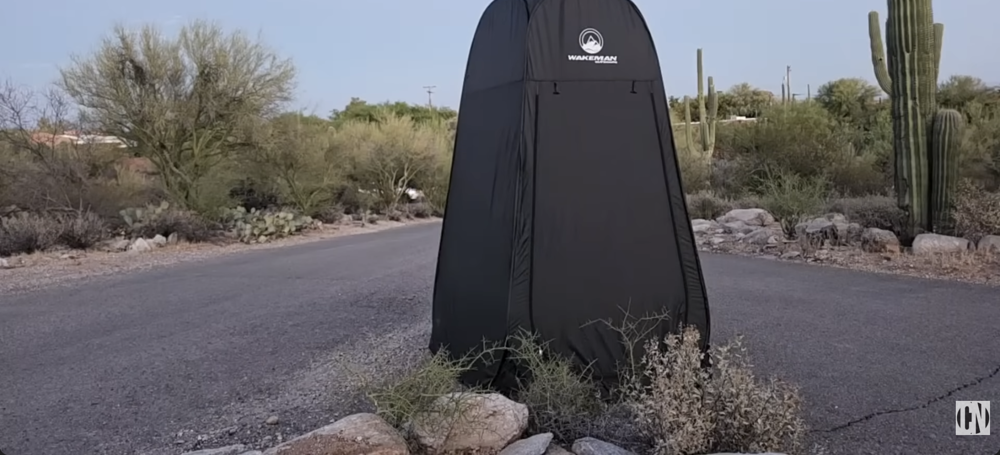

After news broke that Nancy Guthrie was missing, major media outlets, independent journalists, content creators and YouTube streamers descended on her residential neighborhood in Tucson's Catalina Foothills in full force.
What followed was a cascade of traffic obstructions, harassment complaints and law enforcement responses that illuminate tensions between media access, streamer culture and privacy rights.
under construction don't @ me...




Pima County officials announced that traffic on Camino Escalante would shift to one-way beginning Feb. 21, 2026. The temporary restriction was requested by the Catalina Foothills Estates Neighborhood Association, which cited parking and traffic congestion caused by media outlets.
North Camino Escalante from the intersection at North Camino Miraval to East Camino La Zorrela would become northbound only. Do Not Enter signs would be placed at the southern intersection. Parking would be restricted to the west side only.
Since the Sheriff’s Department began investigating the case Feb. 1, media and other members of the public have been parking on the narrow easements of the quiet neighborhood road in the Catalina Foothills. There often are so many media members gathered in the area and vehicles parking on the sides of the road, that vehicles travelling in opposite directions have been unable to get past each other.
Neighbors also have reported that trash trucks have been unable to service the neighborhood. Rural Metro Fire has expressed concern that it will have difficulty responding to emergencies in the neighborhood due to the tight quarters caused by all of the parked cars and trucks in the easements and even in the roadway in some instances.
Even after most news outlets reassigned their on-the-ground reporters and the driving restrictions were lifted, some parking restrictions remained.
A handful of YouTubers and content creators began returning to the location to livestream more defiantly from across the street from Nancy's residence, making the ordinance in part of one neighborhood they don't reside in about themselves. It was an entirely perceived threat to their constitutional rights as well as a totally legit and not at all insane indicator to them that Nancy's long-time friends and neighbors did not care about her and/or also must be hiding something super sinisher. Or something.
The neighbors, predictably, began lodging repeated complaints about the streamers as the situation devolved from media storm to main-character-syndrome streamer tourism.
Despite the one-way street conversion, the situation did not improve as expected. Neighbors continued to report "clogged roads, trespassing, noise, and accumulating trash along the road."
In response, Pima County created a large temporary no-parking zone to be enforced by the Pima County Sheriff's Department. Tickets for violations could reach as high as $250.

PCSD Incident Report 260526197: Deputy A. Duarte responded to a traffic hazard call after receiving reports of a male sitting in the middle of the roadway recording a video.
1st Reporting Party: The reporting party alleged the subject had thrown a cactus at their vehicle and appeared to be holding alcohol.


Car passing right before Zabel walks along the easement to document the cactus clippings. | Criminal Network Live Min Mark 22:38


Cactus clippings discarded near the easement. | Criminal Network Live Min Mark 28:00
2nd Reporting Party: An additional caller reported that a streamer, identified as Alex Zabel, was attempting to interview her and had been speculating about her involvement with the kidnapping. She stated she no longer stayed at her house at night due to ongoing harassment.
3rd Reporting Party: A third call came from someone in Phoenix reported "People are harassing my YouTubers and throwing rocks and cacti at them."
Approx 15:50 hrs: Alex goes live and gets started by showing chat his pee tent.


Zabel showing chat his pee tent. | Criminal Network Live Min Mark 0:00
Upon arrival, Deputy Duarte observed a male matching the description sitting on a chair on the west side of the public road, identified as Alex Zabel. The deputy explained the reason for contact: the cactus allegation and potential alcohol.
Zabel denied throwing a cactus, stating he had been sitting on the west side of the public road live streaming for approximately 43 minutes. He also denied having an alcoholic beverage and consented to a search of his bag, which contained only miscellaneous items.
When Duarte asked if Zabel had been interviewing neighbors, Zabel said he only interviews neighbors who want to be interviewed. The deputy advised Zabel to respect those who did not wish to be interviewed, given the sensitive nature of the case.


Deputies make contact with Zabel. | Criminal Network Live Min Mark 37:31


Property manager speaks to deputies. | Criminal Network Live Min Mark 41:28

Sue Ellen makes a run for it while deputies speaks to Zabel. | Criminal Network Live Min Mark 45:35

Deputies leave after completing call for service. | Criminal Network Live Min Mark 45:35

Zabel streaming setup. | Criminal Network Live Min Mark 22:00

Pima County Sheriff's Deputy Cites Bradshaw. | Daa Juice Live Min Mark 2:16:00

Tucson GIS map of easements in Catalina Foothills Estates No 5. | Pima.gov Viewer
Alex Zabel set up his portable pee tent on the asphalt of the roadway at North Camino Escalante and North Cerrada Chica in a very such brave excercise of his right to........be a hall monitor pest surveilling, auditing, judging, and reporting on every move complete strangers of zero public interest are making in real time.
During this very such brave excercise demonstration, a car is seen driving by. It's safe to assume the driver was not tuning into Alex's Patriot Act livestream to know he was not actually peeing into a pringles can inside the patriot pee tent fully erected to excerce its full right to stand tall in the middle of any public easement of any neighboorhood Alex et al. has determined someone is hiding something sinister.


Car drives by when Zabel is in his pee tent. | Criminal Network Live Min Mark 3:00:25
Zabel's Patriot Pee Tent Simulation. | Criminal Network Live Min Mark 2:58:00
After a local pulls up to chat with Zabel, a Pima County Sheriff's Deputy pulls up to make sure all is well. After offering Alex water, the deputy leaves and then moments later, Sue Ellen rolls up.
Despite Sue Ellen *not* saying she lined the rocks with dog shit, and speculated—reasonably so—that it was the javalinas, Alex and his tens of thousands of supporters have been running around since June 7th declaring that Sue Ellen ADMITTED to putting dog shit out by the rocks bc who gives a shit about getting facts straight when the first amendment is under imaginary attack.
A local, deputy, and neighbor... | Criminal Network Live Min Mark 1:28:00
Special Assignment Briefing: Supervisor Jorge Morales called deputies Woodworth, Medina, and Mahtapene for a briefing on a special assignment.
Sgt. Morales told them to review ARS 13-2917(A)(1) Public Nuisance, regarding YouTube streamers near the Nancy Guthrie residence. They were informed that the Criminal Investigative Division and the Sheriff's legal advisor had been consulted regarding use of this statute.
The deputies were ordered to locate anyone in front of the house live streaming and to cite them for either ARS 13-2917(A)(1) Public Nuisance or ARS 13-2906 Obstructing a Roadway if blocking the roadway.
Woodworth contact with Enderle: Deputy Woodworth found Damian Enderle seated in a chair in a dirt clearing along the western edge of the roadway, with a cellphone on a tripod. Woodworth noted in his report: "I had conducted a check of the area around 16:10 hours and had seen him there. That time, he was not blocking the roadway, nor was he blocking the roadway at this time."
When Enderle asked what crime was being investigated, Woodworth cited ARS 13-2917(A)(1) Public Nuisance. Enderle mentioned that earlier deputies had told him he was "good" and could stay. Woodworth issued Enderle a citation, briefly explaining he had been ordered to do so based on neighborhood complaints. Enderle was released.
Mahtapene contact with Bradshaw: Deputy Mahtapene contacted Troy Bradshaw, who identified himself as "Daajuice" on YouTube and was actively broadcasting with camera equipment nearby. Bradshaw stated deputies had contacted him two hours earlier and told him he was "cool" and could remain in the area.
Bradshaw asked what law he had violated and requested clarification multiple times, asking if he could speak to a supervisor. He was bewildered, stating he had never been told he was prohibited from returning. Bradshaw asked if he could simply leave or arrange transportation instead of being arrested, but was informed the decision to proceed with booking had already been made.
Once Bradshaw's girlfriend arrived to retrieve his equipment, Deputy Mahtapene advised Bradshaw he was under arrest for ARS 13-2917(A)(1) Public Nuisance. Bradshaw placed his hands behind his back without resistance and was handcuffed.
While in the patrol vehicle, Bradshaw again requested clarification regarding the charge. Mahtapene read the applicable statutory language to him. Bradshaw stated he had never heard of the statute before.
Bradshaw was transported to the Pima County Adult Detention Center and booked. Deputy Medina ensured all property belonging to Enderle and Bradshaw was no longer on the roadside and photographed Bradshaw's belongings to document no damage.
On the same day as the Enderle and Bradshaw enforcement action, Alex Zabel was arrested for ARS 13-2917 Public Nuisance.
At the Pima County Adult Detention Center, Zabel was medically cleared by medical staff. Detective Perez-Daniels advised Zabel at the jail that his charge would be Public Nuisance (not Criminal Nuisance) and Zabel understood. Perez-Daniels provided booking staff with Zabel's wallet and his pill medicine bottle (which was cleared by medical staff).

Alex Zabel Citation #844032 | Pima.govPima Justice Court
Zabel returned to Camino Escalante and North Cerrada Chica after being arrested on June 8th. Multiple callers reported him for live streaming and urinating in front of a camera on the roadway.
Deputies arrived and told Zabel he was under arrest for Public Nuisance, ARS 13-2917. When informed of his arrest status, Zabel immediately began resisting. He mocked the officers in a stuttering manner, refused to comply with orders to put out a cigarette, and actively resisted as deputies attempted to place him in handcuffs.
Deputy R. D. Avila reported that Zabel became "highly agitated" and began "yelling profanities" while rotating his body back and forth and attempting to break the officers' hold. He interlaced his fingers to prevent handcuffing, and Sergeant Aragon's microphone clipped, initiating a Code 999 (officer needs assistance). After a physical struggle, deputies were able to place him in double-locked handcuffs.
During escort to the patrol vehicle, Zabel was "irate and spitting as he was talking," though the spitting was not directed at the officer. Deputy Avila informed him that if he spat on him, he would face an additional charge. Zabel appeared more agitated after this warning. He was transported to the Pima County Adult Detention Center and booked on Resisting Arrest, ARS 13-2508 (Class 6 Felony) and Public Nuisance, ARS 13-2917 (Class 2 Misdemeanor).
Zabel arrested again. | Criminal Network Live Min Mark 1:12:00
Arresting Officers: Deputy R. D. Avila #8343, Sergeant M. J. Aragon #6701, Deputy J. O. Rodriguez #7943. Agency Case No.: 260611188

Alex Zabel Interim Complaint | Pima Justice Court
Troy Bradshaw Arraignment Hearing. | Pima Justice Court
Damian Enderle Arraignment Hearing. | Pima Justice Court
Troy Bradshaw Arraignment Hearing. | Pima Justice Court
Alex Zabel Arraignment Hearing. | Pima Justice Court
This timeline draws from multiple incident reports, citations, and official records: